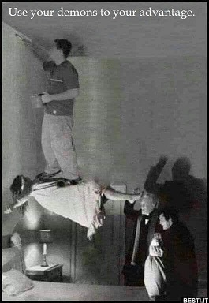

So I grew up in a crazy cult and was never allowed to watch horror or any kind of scary movies; hence my quest for the best scary movies. It can't just be any kind of scary - I don't like slasher films and I don't scare easily. I prefer more "cerebral" scary movies to "jump scare" scary movies. Yes, I've seen all the "classics" and to date, am unimpressed. Below is a brief list and description of some of my favorite scary films I've found so far! *All descriptions from imdb.com*
After the family matriarch passes away, a grieving family is haunted by tragic and disturbing occurrences, and begin to unravel dark secrets.
After a family is forced to relocate for their son' health, they begin experiencing supernatural behavior in their new home, and uncover a sinister history.
A journalist must investigate a mysterious videotape which seems to cause the death of anyone in a week of viewing it.
